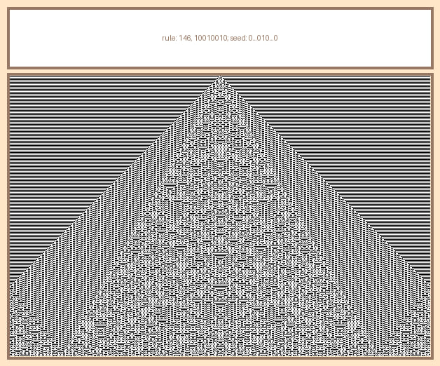

ECA
Концепция:
Элементарный клеточный автомат — это клеточный автомат с одномерным массивом ячеек в форме бесконечной в обе стороны ленты, который имеет два возможных состояния ячеек и правило для определения состояния ячейки на следующем шаге, использующее только состояние ячейки и её двух соседей на текущем шаге.
Описание:
Проект позволяет генерировать карточки с правилами для ECA, а также имеет очень гибкую настройку
Особенности
- Расширение возможных типов клеток
- Расширение количества соседей, влияющих на выбор типа клетки
- Возможность вероятностного подхода к генерации карточки
Технологии:
Python
← Назад к проектам